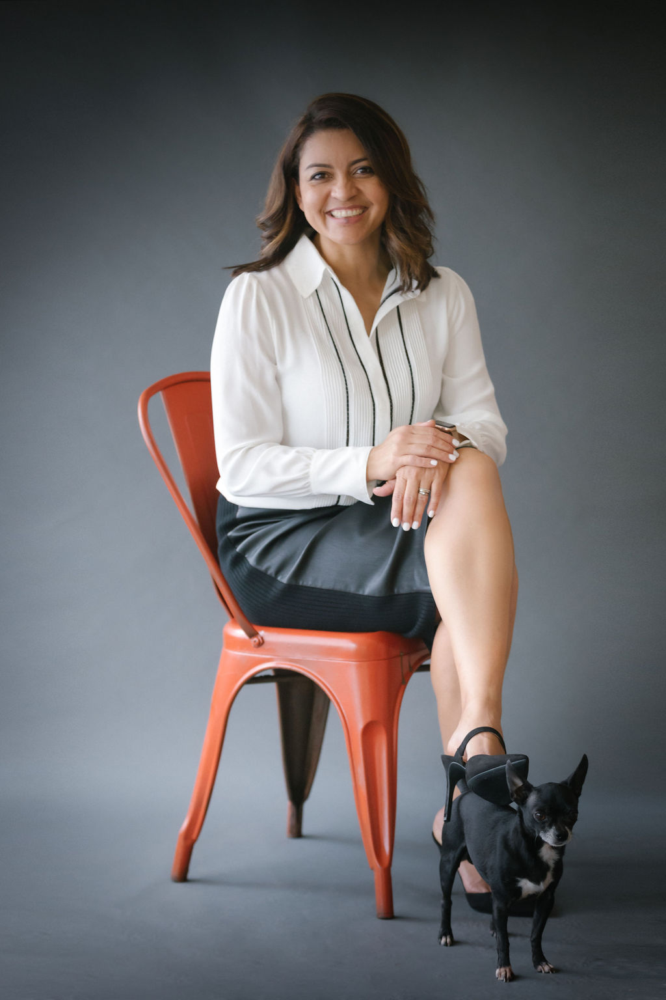
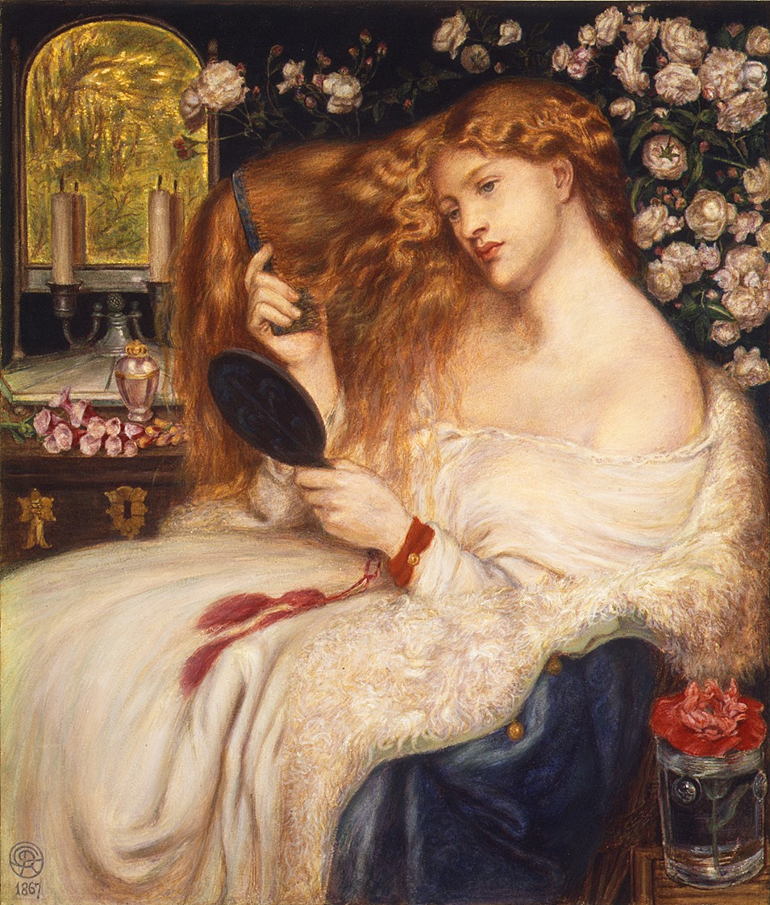
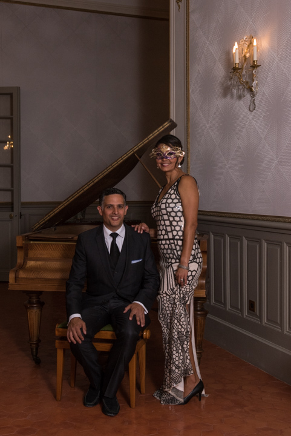
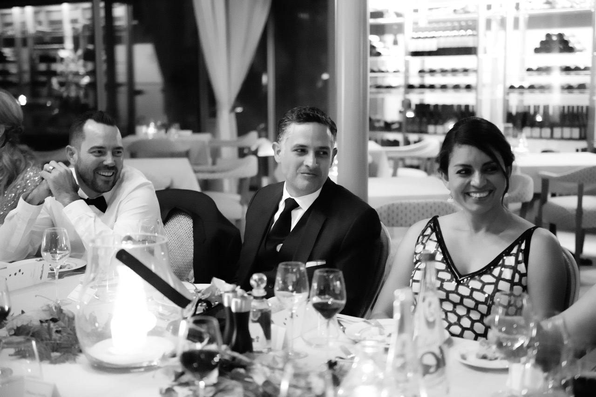
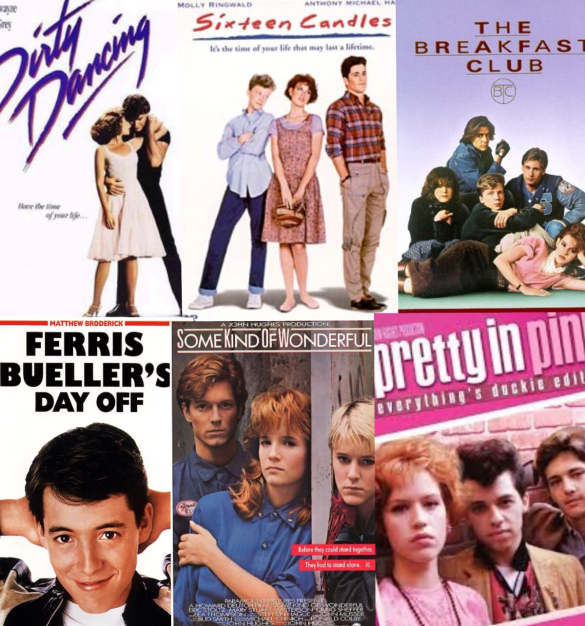
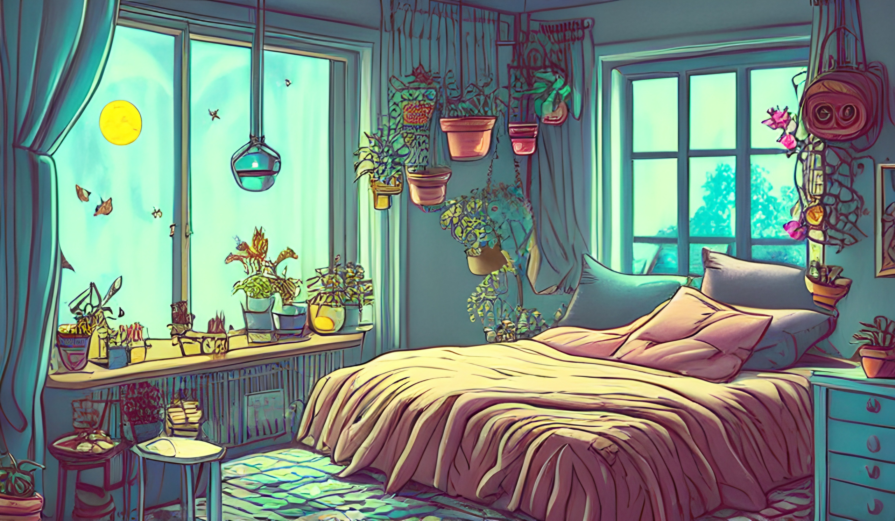

Hello! Hola! Salut! I am Lilieth
About
Lilieth versus Lilith
When I introduce myself, many times people mispronounce my name and call me Lilith. This can be very flattering since Lilith is one of the main goddesses of the Mesopotamian pantheons.
Lady Lilith by Dante Gabriel Rossetti
However, on a not so flattering side, Lilith comes from the word lilîtu, the feminine form of a word meaning “demon” or “spirit”. And in the Old Testament Lilith was the first wife of Adam who was ultimately banished from the Garden of Eden for her disobedience.
Well that doesn’t quite describe me, except for the “Disobedient” part. Now don’t take this the wrong way, I like rules when they are made for the greater good. However, sometimes rules can be limiting and creativity stoppers. The greatest geniuses in history didn’t get far by following all the rules. Take Albert Einstein for example; he was one of the world’s most natural rule breakers. He was willing to bend rules and see beyond a problem. I do like to see beyond the problem and maybe that is why I ultimately became an Engineer and continue to explore and learn.
The meaning of my Name
So because I’m not a fan of the meaning of Lilith and it’s negative connotation, I prefer a more positive twist to the meaning of my name. Lets break it down by letter:
- L is for little, the little things I do, the details that make a difference
- I is for instill, the lessons and ideas I gradually establish on my kids
- L is for love, everlasting love I have for my children and my family
- I is for inspire, I strive to inspire others that anyone can learn anything no matter your age
- E is for expressive; I am not one to hold within, I say what I need to say
- T is for treasure; I treasure every friendship I build along the way
- H is for hope, the encouragement I give to everyone I meet to go the distance no matter how hard it gets
Ultimately, most people call me LiLi!
How do other's see me?
My husband says I am thoughtful, considerate, organized, passionate, and very persistent. Well, I can agree with most of that; specially the stubborn part. HA HA Ha!!And I can have a bit of OCD (obsessive compulsive disorder) when it comes to keeping my house in order. And because of this passion of order and cleanliness, I have had plans of writing a book about how to keep your home in order with a few simple steps.
I started a blog a few years ago called "Mopping in Heels", where I shared my findings and my frustrations of mom life and solutions to the stresses a mom goes through. I guess I should go back to writing because it served me as therapy. When you write about your experiences as a parent, it's a way to let things go and make space for what really matters as a parent. The most difficult job I have ever had in my life, has been to be a mom. But I wouldn't change it for anything. It is the reason I decided to go freelance and continue to learn and keep myself updated to be able to work and be a mom.
On a more upbeat note, I am also known for throwing a good party. I love bringing people together. One of my side hustles while I was taking time off from work to raise my kids, was an event planning business. I launched a website called "Fêtes de Lili" and did some awesome baby showers and kid parties back in the day when my children were small. This also led me to creating an Instagram account to post all the pictures of my events and inspirations. That page and Instagram account have now evolved to a different focus in my life - moving to France from Miami in 2018 and starting a new life as an expat.

I didn't know anything about this word, EXPAT. I have known about being an imigrant because of my experience moving from Honduras to Miami in 1984. I knew that starting a new life in a new country from scratch was part of the immigrant journey. But this time moving to France was not the same. My husband came with a job, we came with our life savings and we were doing it just because we had the means to do so and we wanted to explore. I guess the difference between being an Expat and being an Immigrant, is that as an Expat you are coming in with your own means and do not look for anything from the country you are moving into. No need for a job or government help, you live like a permanent tourist. You basically come just to live and enjoy the culture.
This big adventure turned into a series of notetaking and organization of information, which then resulted in a Podcast I called "Startup in Heels". My podcast was my way to keep my sanity during COVID19 pandemic in 2021.
Where am I from?

I am a MIX of cultures. I was born to a Honduran couple in Bronx, New York and then spent most of my childhood growing up in Honduras. Then at the age of twelve my parents decided to migrate to the United States, following the American dream. I guess you can say I am more American than Honduran, but I like to see myself as a rainbow of colors that continues to transform with the experiences life brings. I have spent 4 years living in the South of France and have added some French Culture things to my mix. Now living in Spain, I am slowly adjusting and grabbing more hints of color along the way.
My Favorite Things
My Love for Old Movies
“Raindrops on roses and whiskers on kittens Bright copper kettles and warm woolen mittens Brown paper packages tied up with strings These are a few of my favorite things…”
Lyrics from The Sound of Music Sound Track
The Sound of Music is definitely one of my favorite classics. My dad had a LP of the soundtrack to the movie when I was a kid and I used to play it sometimes in the afternoons during summer vacation. I have always been a lover of old movies.
I guess my father’s LP collection was an influence on me. The other movie soundtrack he had was West Side Story – “Maria, the most beautiful word that I’ve ever heard…”; I can sing all the songs from the movie. I got so excited when Disney came out with a remake of the West Side Story. I guess it was a story I connected with when I myself became an immigrant in the United States. Even though I was born in New York, my root culture has always been Honduran and thus makes me an immigrant.
Aside from those two classics, a few of my favorite movies that I can watch over and over again are:
Dirty Dancing, Sixteen Candles, Breakfast Club, Ferris Bueller’s Day Off, Weird Science, Gremlins, Terminator (ALL OF THEM), GhostBusters (All of Them) and the list goes on. I am mostly a big fan of the 80s.
Lifestyle
Lifestyle has become a common word being used to label how you live and carry yourself in this world. Lifestyle is everything that makes you unique. It’s all your habits, attitudes, tastes, moral standards and economic level. I have seen this word used so commonly in advertising to lure you in. Let me Lure you into my world and see the lifestyle I like to call “My colorful Circus”.
My Habits
Have you ever had a morning where you wake up before everyone at home and just enjoy the silence with a cup of coffee and a sweet pastry? That is one habit I started when living in France in a small two-bedroom apartment with my two kids, two dogs and my husband. Because our space was tight, we didn’t really have quiet time. So during the pandemic of COVID19 in 2020 thru 2021, I needed to find time to get some silence and me time, so I started the habit of waking up before everyone in my house, even if its just 30 minutes. No matter how tired I am, I get up to have that me time.
My Attitude
The word attitude has a negative connotation for me because in American culture it is used to describe when someone treats you without respect. But giving it a positive meaning, I would say my attitude is the way I approach a challenge. One of the most challenging jobs I have ever had in my life has been that of being a mom. My attitude towards parenting has been to always try to improve. Each parenting stage comes with challenges and the only way to survive it is by learning how to treat my kids with respect, teach them about what I have learned in my life and learn along with them about the new and changing times we are faced with. My attitude to a problem or challenge is education; just take the time to figure things out.
My Tastes
We can talk about taste from food to clothing or love life. To keep it short, let me share with you my taste for food. I just LOVE LOVE LOVE FRENCH CUISINE! I have had a curiousity about France for a long time. I didn’t quite know why until I lived in France for four years. In my opinion, the French are the best at pastries and just taking food seriously. Every plate has it’s uniqueness. I guess I am a lover of butter, cheese, milk products, chocolates and OH MY GOD DUCK CONFIT!
My Morals

Being a daughter of a traditional Latin couple, where the man works and the woman stays at home to take care of the house and the kids, I was raised with certain guidelines of what is right and acceptable. I cannot say I’m a traditional Latina Woman. I believe in equality for all and a balance at home. My moral compass is about treating everyone with respect and compassion. I believe that it should not matter what economic standing you are in, everyone around you deserves to be treated with respect. I believe in inclusivity and in lending a hand to those with need.
One of my strongest missions is to bring equality in technology for women. I believe girls are not given the same opportunities as men when it comes to tech education and growth in tech. This is why as a side hustle, I teach Robotics to children and I try to get little girls excited about Math and Technology. I have participated in First Lego League Robotics Competitions in the United States and in France. This is a passion of mine and I hope to continue it for the rest of my life. I truly believe that the future is in our children and we need to encourage little girls that they also can be engineers and scientists. Technology doesn’t have to be overwhelming, we just need better teachers to know how to encourage women instead of making them feel incapable.
Get In Touch
- liliethordonez@yahoo.com
- Social
- Instagram LinkedIn